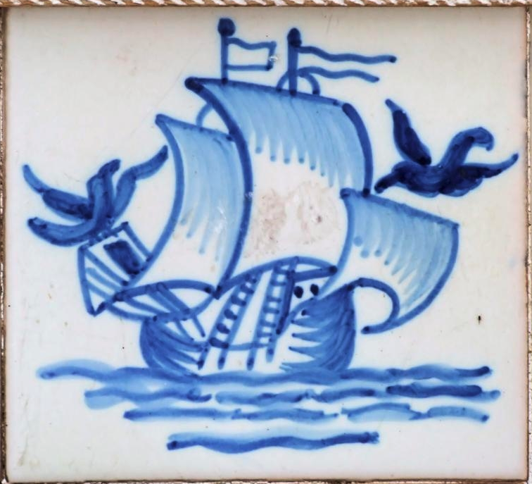

O caminho da saúde para a doença, e de volta, define trilhos digitais que queremos tão longos e saudáveis quanto possível. Neste mapa de estradas digitalizadas tomamos decisões que queremos bem informadas a cada encruzilhada. Prevenir a doença e aumentar a longevidade fica assim, primeiro um jogo que rendemos ao digital , e só depois uma ciência em que se descobrem novos porquês. Nesta apresentação navegaremos as enchentes de dados vivos, em tempo real, que vão do fitness à patologia do cancro, passando pelas torrentes que jorram dos sistemas públicos de saúde. A precisão deste caminho para a longevidade depende de um pacto, nem sempre assumido e raramente discutido, entre a nossa privacidade e a ubiquidade da Web. É aí que as fontes de dados e os motores de inteligência artificial que nos desenham o caminho, crescentemente na praça pública.
The path from health to sickness, and back, identifies digital trails that we want as long and as healthy as possible. We want this roadmap to inform the decisions we make at every fork of the road. We’ll then approach the prevention of disease and the extension of healthy longevity, first as a digital game that we pursue as digital mapping , and only then we discover where it takes us , and why. In this conversation we’ll navigate oceans of data defining paths going from fitness to cancer pathology, and we’ll also cross torrents of public health data. The precision of this navigation depends on a pact, not sufficiently discussed, between our privacy and the ubiquity of the Web. We’ll stop there to ponder how we want artificial intelligence, alongside our own, to help us chart new ways.
